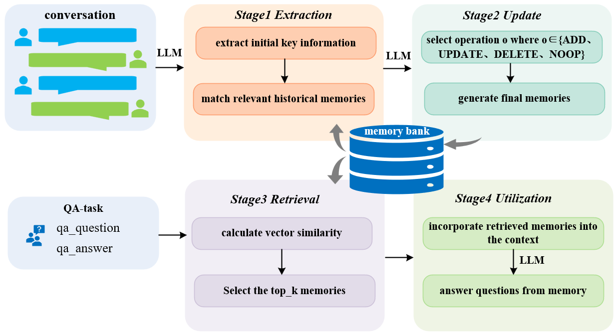
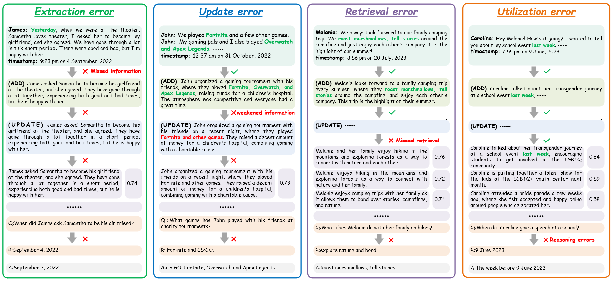
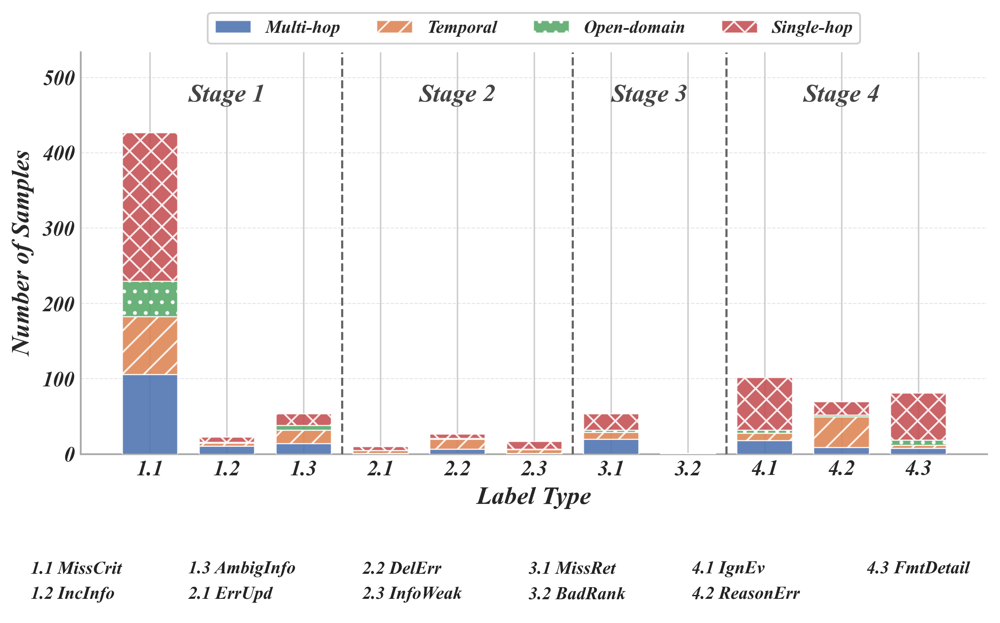
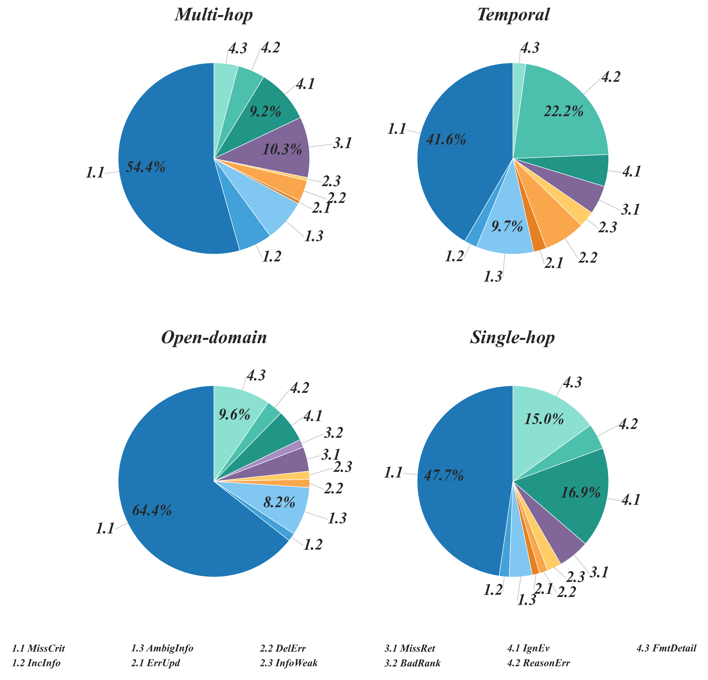
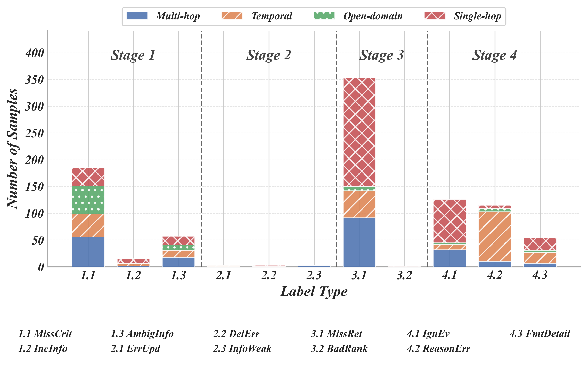
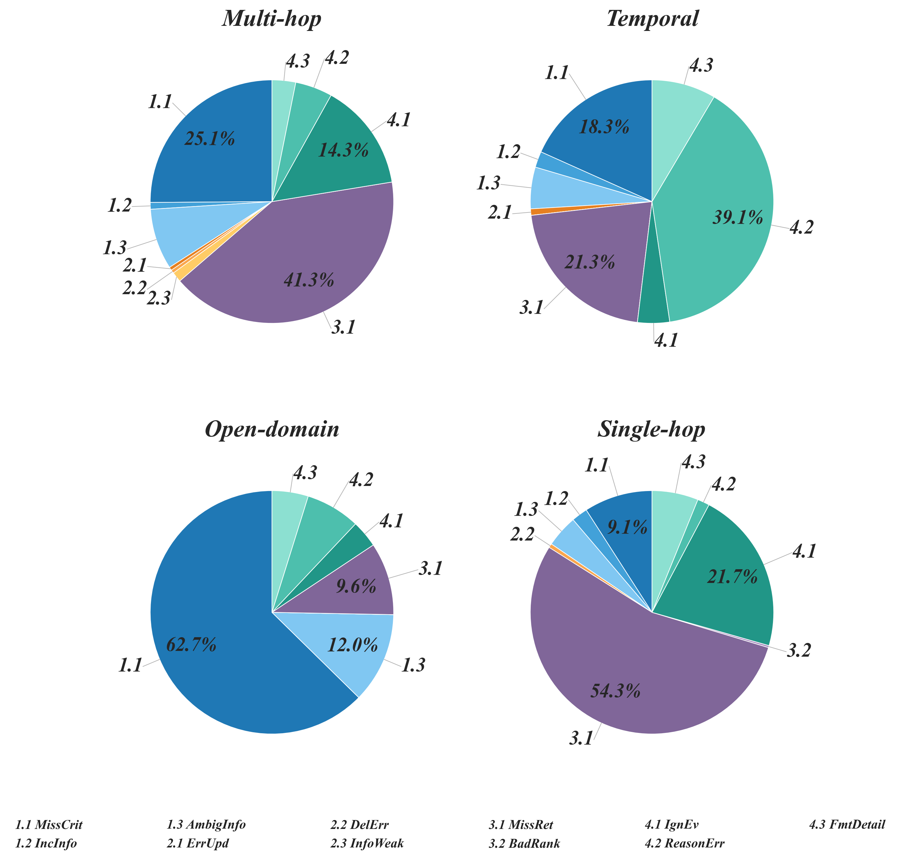
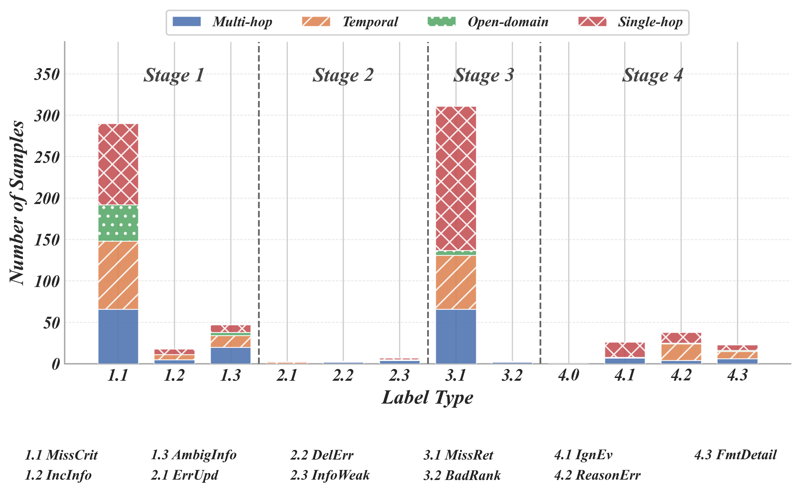
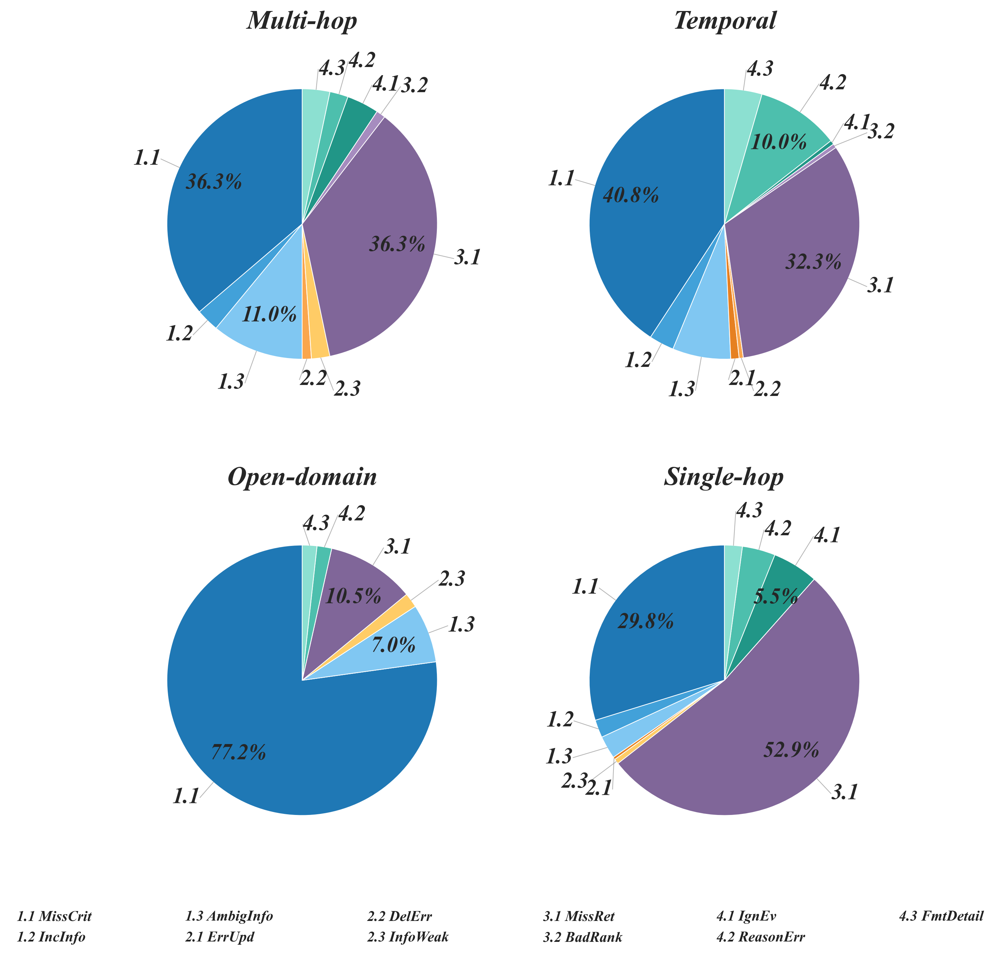
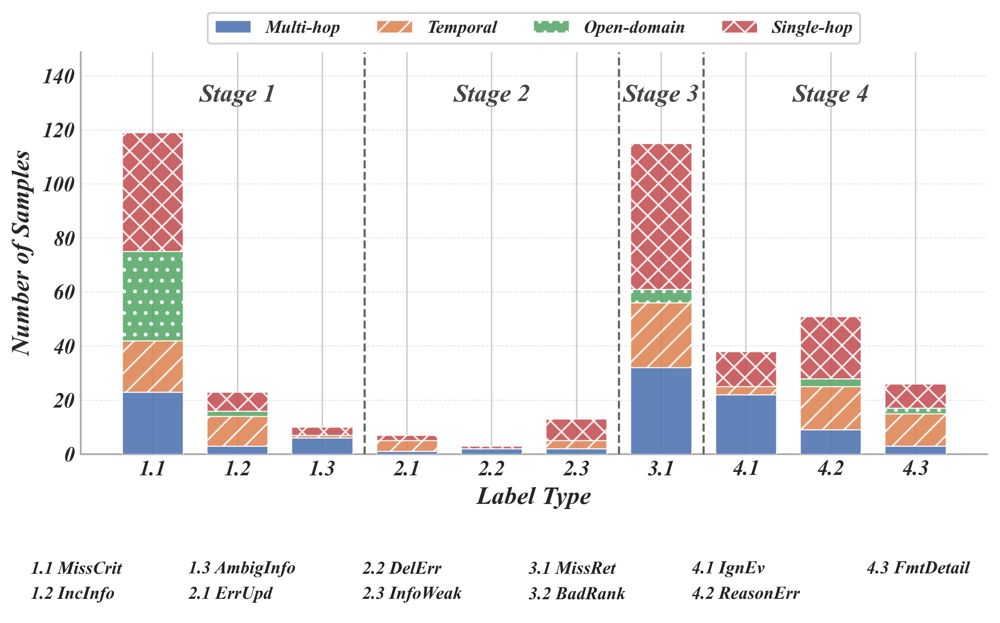
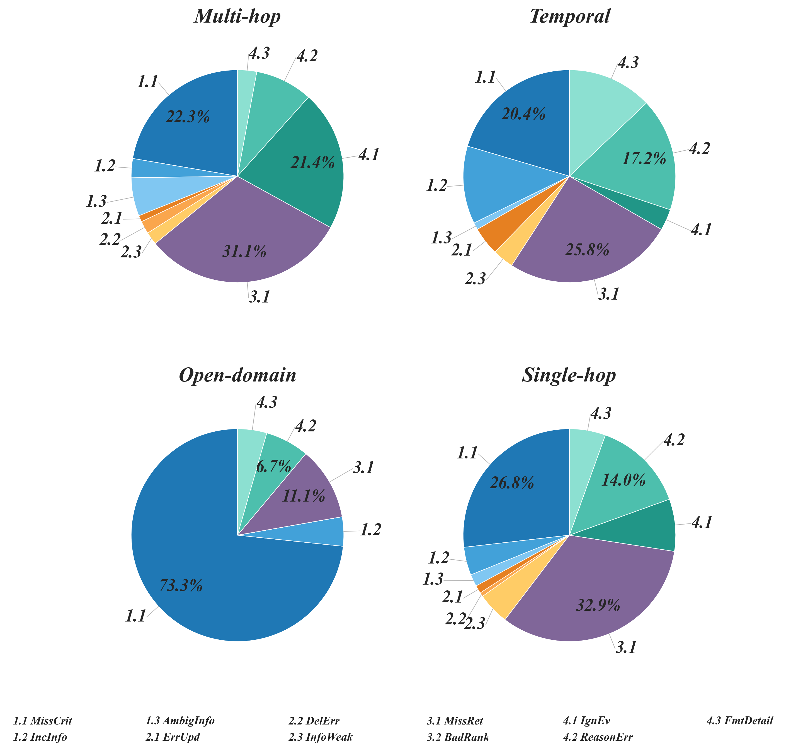

01 — MOTIVATION
A final score cannot explain a memory failure
Long-term memory is becoming a core component of persistent LLM agents. Yet these systems still forget user preferences, contradict earlier statements, and fail to use information that appeared much earlier in a conversation.
Most benchmarks evaluate only the final answer. That single outcome cannot explain whether a failure began when the system wrote a memory, modified it, retrieved it, or tried to reason with it. The result is an engineering blind spot: the same incorrect answer can point to four very different components.
This project introduces MemEval, a provenance-aware diagnostic framework for locating likely failures across the memory lifecycle. It is a diagnostic method rather than a new memory architecture.
02 — METHOD
4 stages, 11 failure types
MemEval instruments observable intermediate states and follows each relevant fact from the source dialogue to the generated answer. It assigns the root cause to the earliest stage that deviates, preventing one upstream error from being counted repeatedly as several downstream failures.

Together, these stages define an 11-class error taxonomy. The pipeline view makes each diagnosis actionable: an extraction failure calls for better information preservation, while a utilization failure calls for stronger evidence-grounded reasoning.
Error taxonomy
| Stage | Label | Failure |
|---|---|---|
| 1 · Extraction | 1.1 Missing Critical Information | Critical information never enters memory |
| 1.2 Incorrect Information | Incorrect information is stored | |
| 1.3 Ambiguous Information | Ambiguous information is stored | |
| 2 · Update | 2.1 Erroneous Update | Erroneous update of an existing memory |
| 2.2 Erroneous Deletion | Erroneous deletion of a valid memory | |
| 2.3 Information Weakening | Information weakened during consolidation | |
| 3 · Retrieval | 3.1 Missed Retrieval | A required memory is not retrieved |
| 3.2 Unreasonable Ranking | Relevant memories ranked unreasonably | |
| 4 · Utilization | 4.1 Ignored Evidence | Retrieved evidence is ignored |
| 4.2 Reasoning Error | Reasoning error over correct evidence | |
| 4.3 Format / Detail Error | Format or detail error in the answer |
The 11-class failure taxonomy across the four pipeline stages — Extraction (1.1–1.3), Update (2.1–2.3), Retrieval (3.1–3.2), and Utilization (4.1–4.3).

Evaluation scope
The study separates the systems being diagnosed from the models used inside those systems and from the models serving as evaluators.
- Memory systems: mem0 is the primary testbed; A-mem, MemoryOS, and OpenClaw test cross-architecture transfer.
- Base models in mem0: GPT-4.1-mini, GPT-4o-mini, Qwen3.5-35B, and Qwen3.5-122B test whether greater model capacity improves memory reliability.
- Meta-evaluators: GPT-5, DeepSeek V3.2 Exp, and GPT-4.1 approximate expert stage attribution through single-model inference, multi-agent discussion, or ensemble voting.
Expert annotators establish the reference labels by examining each question, answer, supporting dialogue evidence, initial memories, update chains, and retrieved memories. They label only the earliest causal failure and resolve disagreements through discussion.
Datasets
The primary benchmark, LoCoMo, contains 1,540 dialogue-grounded QA instances: 282 Multi-hop, 321 Temporal, 96 Open-domain, and 841 Single-hop questions. These categories stress different components, from retrieval-heavy evidence composition to temporal reasoning and direct recall.
A second evaluation uses all 500 long-term-memory QA instances from LongMemEval-S. Its knowledge-update, cross-session, preference, and temporal tasks test whether the taxonomy transfers beyond LoCoMo's distribution.
03 — RESULTS
Where each memory system breaks
Base-model scaling in mem0
| Model | Stage 1 · Extraction | Stage 2 · Update | Stage 3 · Retrieval | Stage 4 · Utilization | Right | Total | Labels | ACC (%) | |||||||
|---|---|---|---|---|---|---|---|---|---|---|---|---|---|---|---|
| 1.1 | 1.2 | 1.3 | 2.1 | 2.2 | 2.3 | 3.1 | 3.2 | 4.1 | 4.2 | 4.3 | |||||
| Closed-source models | |||||||||||||||
| GPT-4.1-mini | 408 | 8 | 1 | 13 | 2 | 6 | 228 | 16 | 24 | 46 | 14 | 776 | 1,540 | 766 | 50.39 |
| GPT-4o-mini | 344 | 11 | 24 | 5 | 26 | 12 | 88 | 6 | 112 | 61 | 70 | 759 | 1,540 | 781 | 50.71 |
| Open-weight models | |||||||||||||||
| Qwen3.5-35B | 289 | 17 | 9 | 9 | 0 | 5 | 53 | 0 | 34 | 40 | 35 | 884 | 1,540 | 656 | 57.40 |
| Qwen3.5-122B | 264 | 20 | 12 | 14 | 6 | 11 | 53 | 0 | 33 | 40 | 45 | 898 | 1,540 | 642 | 58.31 |
Overall diagnostic results on LoCoMo. Labels map to the taxonomy: Stage 1 (Ext.) 1.1 Miss, 1.2 Incorrect, 1.3 Ambiguous; Stage 2 (Upd.) 2.1 Err. Update, 2.2 Delete, 2.3 Weaken; Stage 3 (Ret.) 3.1 Miss, 3.2 Rank; Stage 4 (Util.) 4.1 Ignore, 4.2 Reason, 4.3 Format.
Capacity produces only marginal gains. Stronger models reduce some extraction or retrieval errors but can introduce more ignored-evidence and response-detail errors, shifting the bottleneck downstream rather than removing it.
Diagnosis by memory system
The same diagnostic pipeline runs unchanged across four memory architectures. The stage profiles differ sharply even where end-to-end accuracy is similar — evidence that comparable scores can hide entirely different engineering problems.
mem0 — primary testbed
Failures concentrate in extraction: missing critical information (1.1) dominates every question category, before retrieval or reasoning get a chance to matter.


A-mem
The bottleneck moves downstream: missed retrieval (3.1) becomes the largest single failure source, while extraction errors shrink relative to mem0.


MemoryOS
Failures split almost evenly between extraction (1.1) and retrieval (3.1), with comparatively little loss in update and utilization.


OpenClaw
On the complete LoCoMo set, OpenClaw reaches 73.70% QA accuracy: 1,135 correct answers and 405 diagnosed failures from 1,540 instances. Missing extraction accounts for 119 failures and missed retrieval for 115.


On LongMemEval-S, mem0 with GPT-4.1-mini reaches 49.60% QA accuracy: 248 correct answers and 252 errors. Missing Critical Information accounts for 166 errors, making extraction even more dominant in cross-session and temporal settings.
04 — INSIGHTS
What the diagnosis reveals
- Extraction is the common early bottleneck. Summary-style compression frequently removes low-frequency entities, qualifiers, implicit evidence, and temporal anchors before they enter persistent memory.
- Downstream bottlenecks depend on the task. Multi-hop questions expose missed retrieval; temporal tasks expose reasoning errors; some single-hop failures occur because the model ignores evidence that was successfully retrieved.
- Scaling does not repair the pipeline. Larger backbones change where failures appear, but do not eliminate the structural weaknesses of memory extraction, retrieval, and evidence utilization.
- End-to-end accuracy is not enough. Two systems with similar QA accuracy may require entirely different engineering interventions.
- Automated diagnosis is useful at the trend and stage level. It can reduce the cost of large-scale analysis, while experts remain necessary for subtle cascading and ambiguous cases.
Limitations
- MemEval requires observable intermediate traces and is not directly applicable to fully black-box memory systems.
- The automated evaluator favors upstream explanations and can confuse retrieval failures with extraction failures.
- Multi-hop and open-domain attribution is less reliable than temporal and single-hop attribution.
- The framework diagnoses failures but does not itself introduce stage-specific fixes.
- The main cross-architecture table does not report the sampled subset size for A-mem and MemoryOS, so those percentages should be treated as preliminary transfer evidence.
Conclusion
Reliable long-term memory requires more than a stronger language model or a better final QA score. It requires visibility into the entire path from dialogue to stored representation, subsequent updates, retrieval, and final reasoning.
MemEval turns memory reliability into a pipeline engineering problem. Its central result is that information is often lost before it reaches persistent memory, while complex tasks continue to fail after storage through retrieval and utilization. Stage-wise diagnosis reveals those differences and supports targeted optimization in place of brute-force scaling.